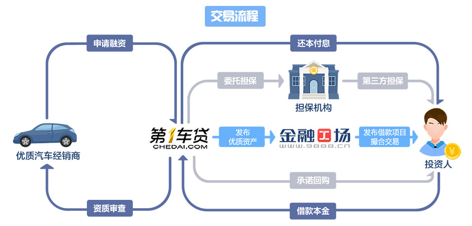
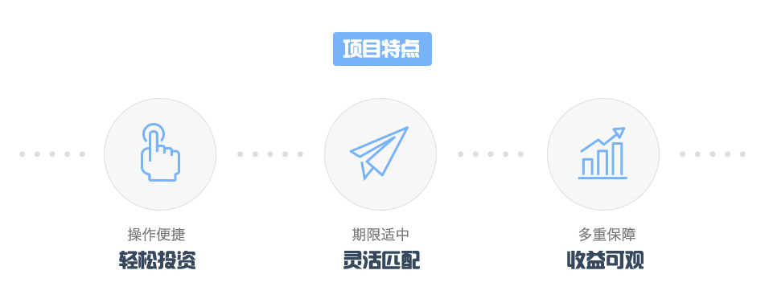
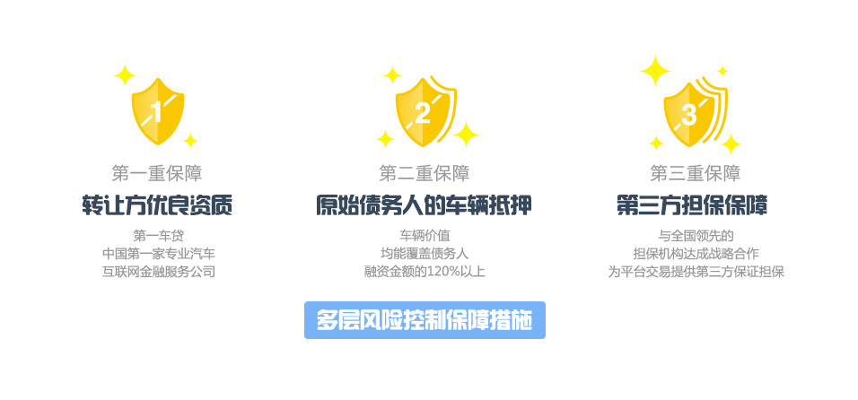

什么是易车享？
由金融工场（www.9888.cn）推出的汽车行业供应链金融债权转让项目。该项目的债权转让方为上海锋之行汽车金融信息服务有限公司（以下简称"第一车贷"），出让资产为针对优质汽车经销商的供应链融资业务债权。展开全部
易车享的优势
- 融资期限1-6个月
- 预期收益率高达6% -13%
- 资产价格不高于原始债权的本金金额
- 起投金额仅1000元起



-
债权转让方
上海锋之行汽车金融信息服务有限公司
中国第一家专业汽车互联网金融服务公司，公司服务团队由银行、汽车生产厂商、汽车金融公司、汽车销售公司等领域的专业团队组成，专注于汽车流通环节中金融项目的研发与运营，为新车经销商、二手车经销商、汽车用品商、汽车物流商、汽车消费者等提供汽车产业链环节的各类金融项目
-
担保机构
北京联合开元融资担保有限公司
北京联合开元融资担保有限公司是联合创业担保集团有限公司在北京投资设立的控股子公司，公司注册资金人民币3亿元，实收资本3亿元。开元担保经联合信用管理有限公司给予"A+"评级，开元担保是北京市信用担保业协会常务理事单位，并已于2009年12月通过ISO9001质量管理体系认证，是中国开发性金融促进会单位会员
-
融资平台
金融工场
金融工场是由香港上市金融企业——中国信贷控股有限公司（Credit China，股票代码：08207.HK）100%战略控股，由北京凤凰信用管理有限公司（简称：凤凰信用）倾力打造的，专注于金融资产交易信息撮合的互联网金融平台。
金融工场致力于通过专业高效的投融资咨询服务，解决企业融资门槛高、融资渠道少、融资速度慢等难题；为资金闲置、有理财需求的投资者提供精选的优质信贷资产；为小贷公司、资产管理公司及其他贷款机构等提供P2P解决方案及线上交易。平台基于不同类型金融产品特点、流动性与收益预期，打造多样化在线投资产品以及特色化的资金出借咨询服务。